Un thème de l'épreuve d'optique géométrique et physique (OGP) (U42, coefficient 3) du BTS Opticien-Lunetier. Il est tombé à 5 des 7 sessions analysées. Sur cette page : 5 définitions à savoir et 3 questions corrigées.
Système qui transforme un faisceau de rayons parallèles en un autre faisceau de rayons parallèles : il n'a pas de foyer.
Pour comprendre : Dans une lunette, le foyer image de l'objectif est confondu avec le foyer objet de l'oculaire.
À savoir par cœur
Lunette de Kepler
Probable
Utilisée dans le sujet 2023
Lunette afocale formée d'un objectif et d'un oculaire convergents. Son grossissement vaut f'ob / f'oc en valeur absolue et l'image est renversée.
Lunette de Galilée
Probable
Utilisée dans le sujet 2018
Lunette afocale formée d'un objectif convergent et d'un oculaire divergent. Elle est courte (longueur f'1 + f'2, avec f'2 < 0) et donne une image droite.
Redresseur (véhicule)
Probable
Utilisée dans les sujets 2024, 2026
Lentille ou système de prismes placé dans une lunette pour retourner l'image.
Pour comprendre : Une lentille redresseuse travaille avec un grandissement −1 et allonge la lunette de 4 fois sa focale.
Téléobjectif
Probable
Utilisée dans le sujet 2026
Objectif formé d'une lentille convergente suivie d'une divergente : il a une grande focale dans un tube court.
Pour comprendre : La distance entre la première lentille et le foyer image est plus petite que la focale.
Trois questions corrigées
Cherche d'abord ta réponse, puis ouvre la correction.
Type BTS 2023 · Niveau facile
Une lunette de Kepler a un objectif de f'ob = 120 mm et un oculaire de f'oc = 20 mm. Quel est son grossissement (en valeur absolue) ?
6
100
140
2,4
Voir la correction de la question 1
Réponse A. 6
Pour une lunette afocale : G = f'ob / f'oc = 120 / 20 = 6. Avec Kepler (deux lentilles convergentes), l'image est renversée : G = −6, d'où le redresseur (prismes) sur les modèles terrestres.
Type BTS 2018 · Niveau moyen
Lunette de Galilée afocale : objectif convergent f'1 = 90 mm, oculaire divergent f'2 = −30 mm. Quelle distance entre les deux lentilles ?
120 mm
30 mm
60 mm
90 mm
Voir la correction de la question 2
Réponse C. 60 mm
Comme pour Kepler, F'1 = F2, donc O1O2 = f'1 + f'2 = 90 + (−30) = 60 mm. La Galilée est plus courte. G = −f'1/f'2 = 3, positif : l'image est droite, pas besoin de redresseur.

Type BTS 2023 et 2026 · Niveau facile · Calcul
Lunette de Kepler afocale : objectif de f'ob = 200 mm, oculaire de f'oc = 25 mm. Calcule son grossissement, avec son signe.
Réponse sans unité, arrondie à l'unité, avec son signe.
Voir la correction de la question 3
Réponse : −8.
G = −f'obf'ocf'ob sur f'oc= −20025200 sur 25 = −8Le signe moins indique une image renversée : c'est le cas de toute lunette de Kepler sans redresseur.
Le QCM compte 7 questions sur ce thème. Chacune est corrigée et expliquée, et celles que tu rates reviennent toutes seules à 1, 3, 7, 14 et 30 jours.